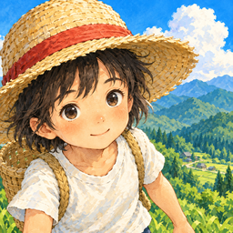

畑をたがやし、鳥を育て、山で山菜を採ったり、釣りや狩り、虫とりをしたりしながら、四季をめぐる山小屋ぐらしを楽しむゲームです。
不具合やご意見は、こちらのメールアドレスまでお送りください。
不具合のときは、お使いの iPhone の機種と iOS のバージョン、どんな操作をしたときに起きたかを書いていただけると助かります。
お使いの iPhone の中に保存されます。iCloud が使える状態なら、あなたの iCloud にも保存され、同じ Apple アカウントの別の iPhone に引きつげます。運営者が記録を受け取ることはありません。
新しい iPhone で同じ Apple アカウントにサインインし、iCloud を使える状態にしてからアプリを入れると、続きから遊べます。iPhone のバックアップから復元した場合も引きつがれます。
iPhone の中の記録は消えます。iCloud に保存された記録は残るので、入れなおすと戻せます。
広告を見ると、ゲームの中だけで使える「ぜに（文）」や、作物・たまごなどのおまけがもらえます。ぜには本物のお金ではなく、換金したりゲームの外で使ったりすることはできません。
広告を見るかどうかは自由で、見なくても最後まで遊べます。ぜにがもらえる広告は 1 日 3 回までです。